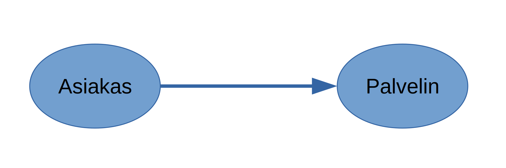

HTTP
HTTP
HyperText Transfer Protocol
Webin tiedonsiirtoprotokolla
Noudattaa asiakas-palvelin-mallia
Tilaton
Tekstipohjainen
Web-ohjelmoinnin kannalta HTTP on oleellinen protokolla
- Rajapinta web-selaimen ja palvelimen välillä
Yleensä käytössä versio HTTP/1.1 joka on määritelty dokumenteissa RFC 7230, 7231, 7232, 7233, 7234, 7235
HTTP protokollapinossa
- HTTP on sovelluskerroksen protokolla
Asiakas-palvelin
- Asiakas-palvelin-malli (Client-Server Model) on tapa jakaa hajautettu järjestelmä kahdenlaisiin rooleihin:
asiakkaisiin ja palvelimiin
- Web-sovelluksessa asiakas on yleensä web-selain

Palvelin tarjoaa resursseja, joita asiakkaat pyytävät
- Asiakas ottaa yhteyden palvelimeen, ei toisin päin
Sama tietokone voi toimia tilanteen mukaan sekä asiakkaan että palvelimen roolissa
Pyyntö & vastaus
- HTTP-protokollassa asiakas lähettää pyynnön (request)
- Palvelin vastaa pyyntöön

Tilattomuus
HTTP on tilaton protokolla
Tilattomuus = palvelin ei muista aiempia pyyntöjä
- Jokainen pyyntö-vastaus-pari on erillinen kokonaisuutensa
- Pyynnössä on oltava kaikki sen käsittelemiseen tarvittava tieto
Tilattomuus yksinkertaistaa palvelimen toteutusta
Usein kuitenkin web-sovelluksissa täytyy säilöä tilaa
- Esim. ostoskorin sisältö
- Tilanhallinta täytyy toteuttaa sovelluskohtaisesti
HTTP-esimerkki
- Pyyntö
GET /index.html HTTP/1.1
Host: www.example.com- Vastaus
HTTP/1.1 200 OK
Date: Tue, 13 Jan 2015 08:15:00 GMT
Content-type: text/html; charset=UTF-8
Content-length: 132
<html>
<head>
<title>An Example Page</title>
</head>
<body>
Hello World, this is a very simple HTML document.
</body>
</html>HTTP-pyyntö
HTTP-pyynnön rakenne:
- Pyyntö-rivi (Request Line)
- Otsikkotiedot (Headers)
- Tyhjä rivi
- Runko (Message Body)
Osa pyynnöistä sisältää vain kohdat 1. ja 2.
Pyyntö-rivi sisältöö HTTP-metodin, haettavan resurssin ja HTTP:n version
GET /index.html HTTP/1.1- Otsikkotiedot ovat kaksoispisteellä erotettuja avain-arvo-pareja:
Accept: text/plain- Runko voi olla mitä tahansa
HTTP-vastaus
HTTP-vastauksen rakenne:
- Status-rivi
- Otsikkotiedot
- Tyhjä rivi
- Runko
Status-rivi sisältää HTTP:n version ja status-koodin selitysteksteineen
HTTP/1.1 404 Not Found- Muu viestin rakenne on sama kuin pyynnössä
HTTP-metodit
- HTTP-pyynnön metodi ("verbi") ilmoittaa minkä tyyppisestä pyynnöstä on kyse
| Metodi | Merkitys |
|---|---|
GET |
hae resurssi |
POST |
lähetä dataa palvelimelle, esim. luo uusi resurssi |
PUT |
päivitä resurssi (tai luo uusi jos ei olemassa) |
DELETE |
tuhoa resurssi |
Muitakin:
HEAD,OPTIONS,TRACE,PATCH,CONNECTKuvattu tarkemmin RFC 7231:n kohdassa Request Methods
PATCHei tosin ole mukana HTTP 1.1:n määritelmässä
Turvalliset ja idempotentit metodit
Turvalliset metodit (Safe methods)
- Eivät muuta palvelimen tilaa
GET,HEAD,OPTIONS,TRACE
Idempotentit metodit
- Yhdellä pyynnöllä on sama vaikutus kuin usealla identtisellä pyynnöllä
PUT,DELETE- Kaikki turvalliset metodit ovat myös idempontentteja
Muut
POST,PATCH
HTTP:n statuskoodit
- HTTP-vastaus sisältää statuskoodin, jolla ilmoitetaan pyynnön
onnistumisesta
- Kaikki koodit: RFC 7231: Response Status Codes
| Statuskoodi | Selitys | Esimerkkejä |
|---|---|---|
1xx |
Pyyntö kesken | 100 Continue |
2xx |
Pyyntö onnistui | 200 OK201 Created |
3xx |
Uudelleenohjaus | 302 Found |
4xx |
Asiakkaan virhe | 400 Bad Request403 Not Allowed404 Not Found |
5xx |
Palvelimen virhe | 500 Internal Server Error |
HTTP:n otsikkotiedot
Otsikkotiedot (headers) ovat HTTP-viestissä määriteltyjä avain-arvo-pareja, joilla määritellään muun muassa
- viestin rungon tietomuoto
- välimuistin käyttäytymistä
- autentikointitietoja
- ja paljon muuta
Esim:
Content-Type: text/htmlOtsikkokenttien nimet ovat kirjainkokoriippumattomia (case-insensitive)
HTTP 1.1 määrittelee joukon otsikkokenttiä
- Lisäksi voi olla muitakin, sovelluskohtaisia otsikkokenttiä
HTTP-pyynnön otsikkotietoja
Hostmäärää kohdepalvelimen osoitteen- Voidaan erotella samassa IP-osoitteessa olevat palvelimet toisistaan
- Ainoa pakollinen otsikkokenttä HTTP 1.1:ssä
Host: www.tut.fiUser-Agent: tietoja asiakkaasta (web-selaimesta)Referer[sic]: URI josta pyyntö on peräisin
Referer: www.example.com/foo/bar.html- Web-selain lähettää nämä automaattisesti
Viestin esitysmuoto
Sekä pyynnön että vastauksen otsikkotiedoissa voidaan kuvata runko-osassa käytetty esitysmuoto
Content-Type: rungon mediatyyppi
Content-Type: text/html; charset=utf-8Content-Language: runko-osassa käytetty (luonnollinen) kieli
Content-Language: fi- Lisäksi:
Content-Encoding,Content-Location
Asiakkaan hyväksymät esitysmuodot
HTTP-pyynnössä voidaan määritellä esitysmuoto, jolla palvelimen halutaan vastaavan
Accept: vastauksessa hyväksyttävät mediatyypit
Accept: text/html,application/xhtml+xml,*/*;q=0.8Accept-Language: fi-FI, en-US, fi, en- quality value
q=[0..1]määrää kuinka mieluusti vastaanotetaan kutakin mediatyyppiä/kieltä/tms.- oletuksena 1
Joitain mediatyyppejä
| Mediatyyppi | Selitys |
|---|---|
text/html |
HTML-dokumentti |
text/css |
CSS-dokumentti |
application/javascript |
JavaScript-ohjelma |
application/json |
JSON-formaatti, käytetään datan siirtoon |
application/xml |
XML-formaatti, käytetään datan siirtoon |
image/png |
PNG-tyyppinen kuva |
image/vnd.valve.source.texture |
Valve-yhtiön tekstuuriformaatti |
Kaikki IANA:lle rekisteröidyt mediatyypit
Cache-Control
HTTP-vastauksen "voimassaoloaika" voidaan määritellä
Cache-Control-otsikkokentässä- Voimassaoloaika = kuinka kauan viestiä voidaan säilyttää välimuistissa hakematta sitä uudelleen palvelimelta
Vastausta ei saa säilöä välimuistiin:
Cache-Control: no-cacheVastausta saa pitää välimuistissa korkeintaan 3600 sekuntia:
Cache-Control: max-age=3600Myös muita välimuistin hallintaan liittyviä otsikkokenttiä on olemassa
Muuta
HTTP määrittelee myös tilanhallintaan (mm. evästeisiin) ja autentikointiin liittyviä otsikkokenttiä
Palataan näihin myöhemmin
Harjoitus
Katsotaan miltä HTTP pyynnöt ja vastaukset näyttävät käytännössä. Avaa Firefoxin kehitystyökalujen Network-välilehti ja tällä kertaa vaikkapa URL-osoite http://www.tut.fi
Mitä HTTP-otsikkotietoja (headers) selain lähettää tehdessään HTTP-pyynnön? Entä mitä otsikkotietoja on HTTP-vastauksessa?
Minkä HTTP-statuskoodin http://www.tut.fi palauttaa? Mitä se tarkoittaa?
Vaikka syötät URL:n http://www.tut.fi, avaa selain lopulta URL:n http://www.tut.fi/fi/etusivu . Miten tänne päädyttiin?
Etusivun lataamisen jälkeen selain tekee paljon muitakin HTTP-pyyntöjä, joilla ladataan mm. CSS-, JavaScript- ja kuvadokumentteja. Tarkastele vielä näiden HTTP-vastausten statuskoodeja ja otsikkotietoja.